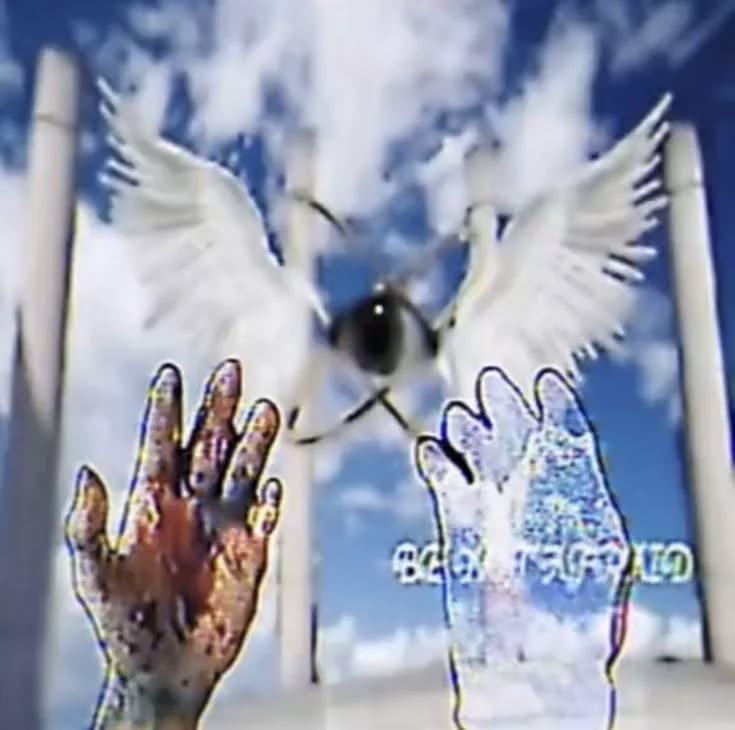

<htmk>
<head>

<title>You're lost, man</title>
</head>
<body>
        <p id="Back">
<p<a href="../Główna/Index.html" id="Back" style="position:absolute; left:600; top:30; font-size:140%; text-shadow:2px 2px 6px blue"> Zbładziłeś,człowiecze. </a></p>
<a href="../Główna/Index.html" id="Back">  </a>
<a href="../Główna/Index.html" id="Back"></a>
</p>

<audio autoplay loop >
  <source src="audio/Silent Hill 3 Save Theme Extended.mp3" type="audio/mpeg">
</audio>

</body>
<style>
Body{
background-image:url('tlo/1.gif');
background-size:5.5%;

}


#Back{
color:white; 
position:absolute;
font-family:"Jacquard 24", system-ui;
filter:drop-shadow(0px 0px 14px gray);
}

@keyframes shake {
  0%,100% { transform: translateX(0); }
  25%     { transform: translateX(-3px); }
  50%     { transform: translateX(2px); }
  75%     { transform: translateX(-3px); }
}

#Back:hover{
color:#6c1a1a;
filter:drop-shadow(0px 0px 4px white);
  animation: shake 0.5s infinite linear;
cursor: url('Kursor/raven2_cursor.png'), auto;    
}

</style>
</html>
